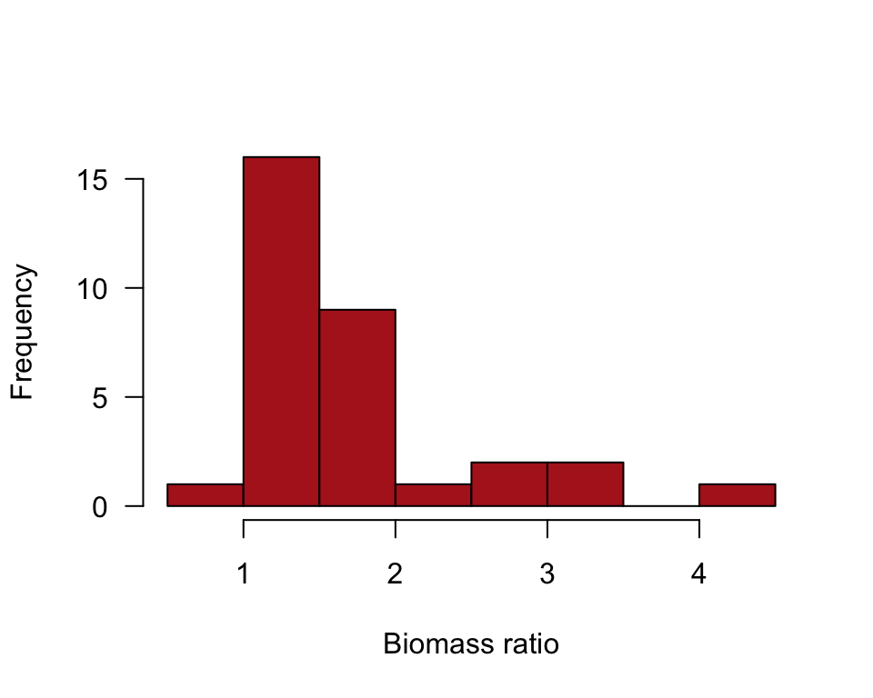
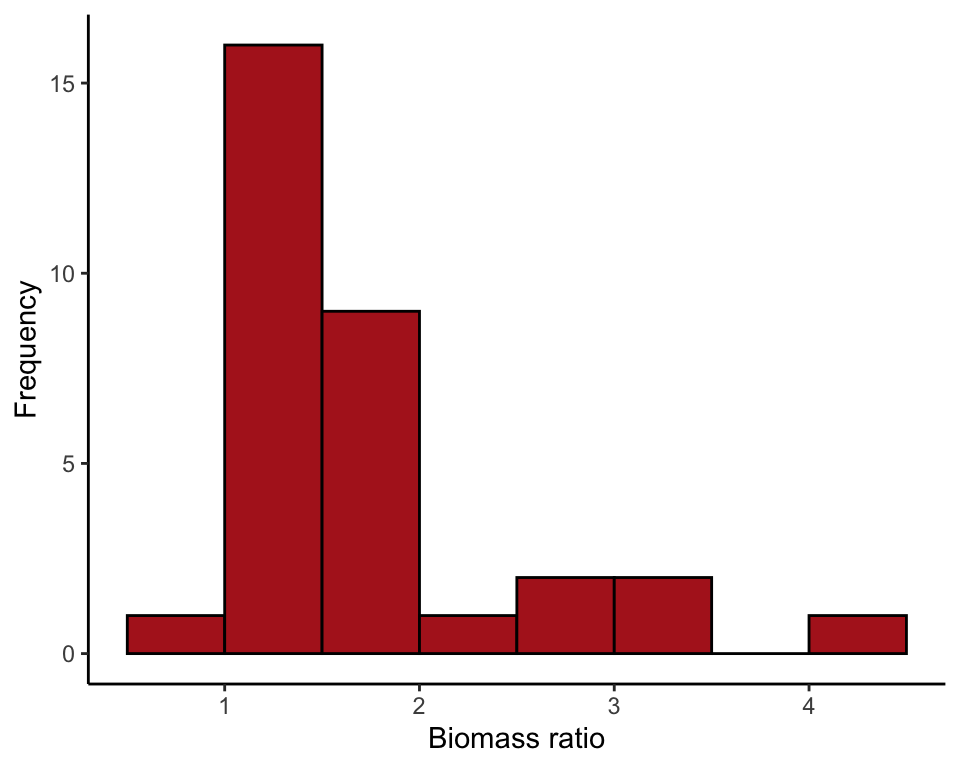
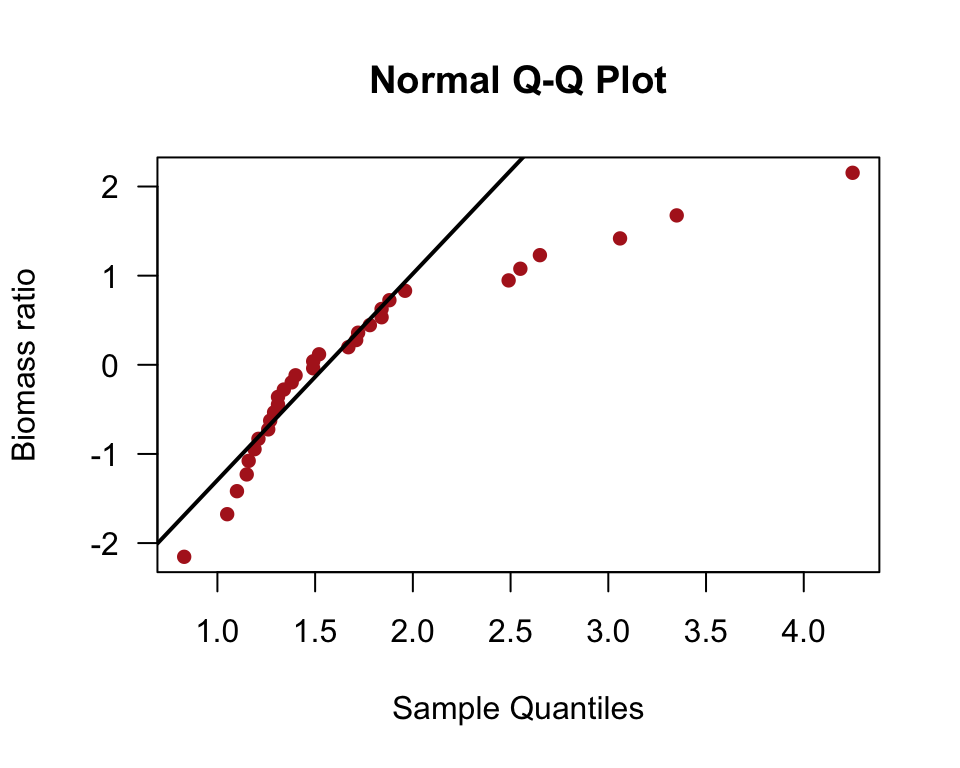
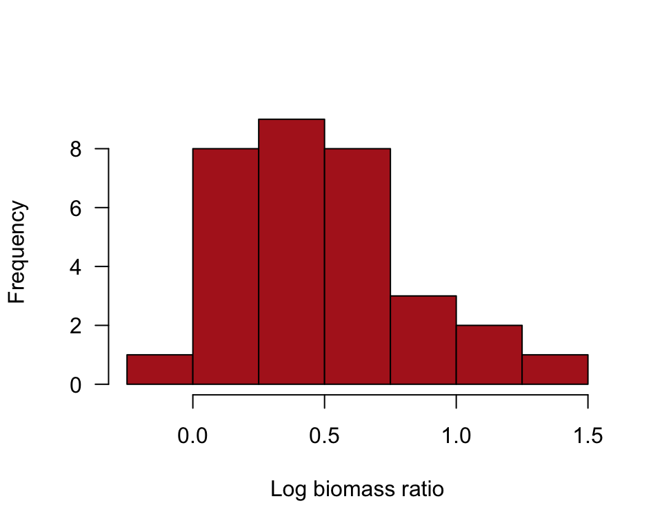
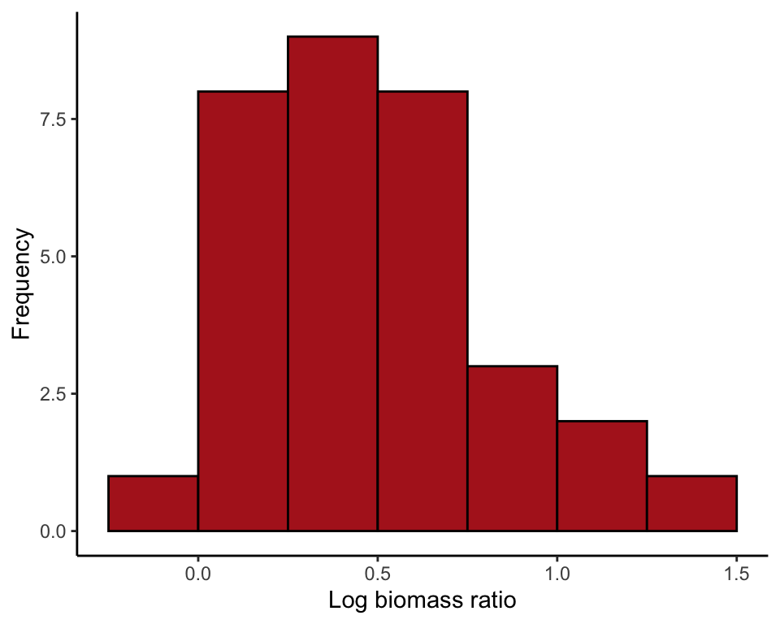
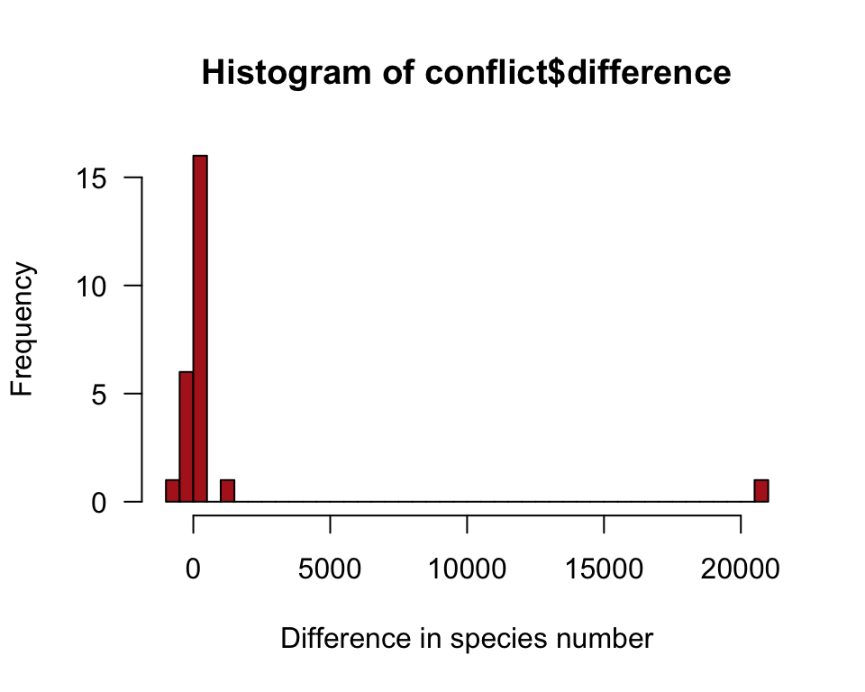
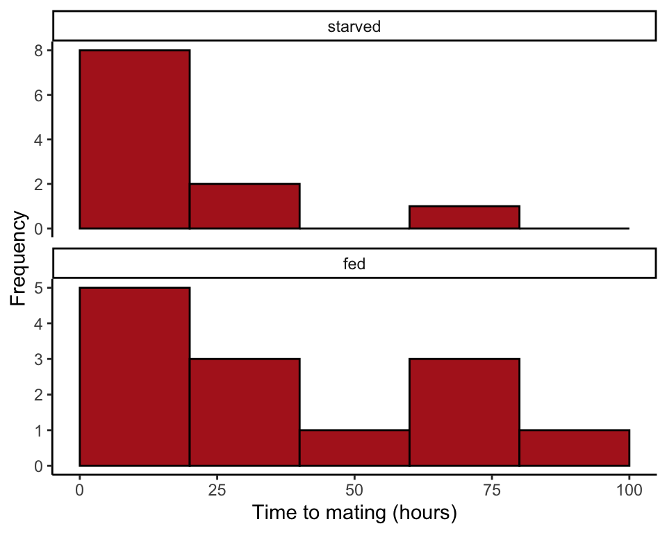
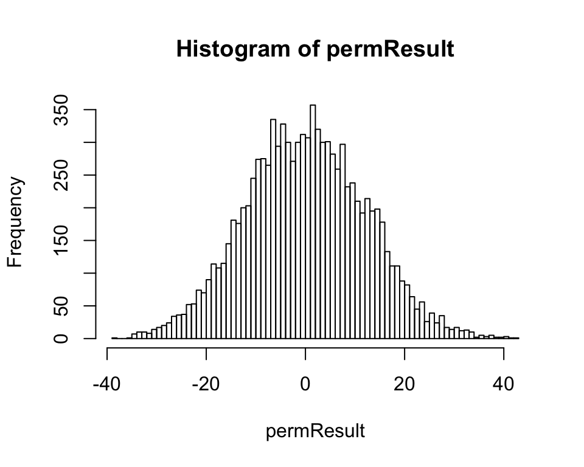
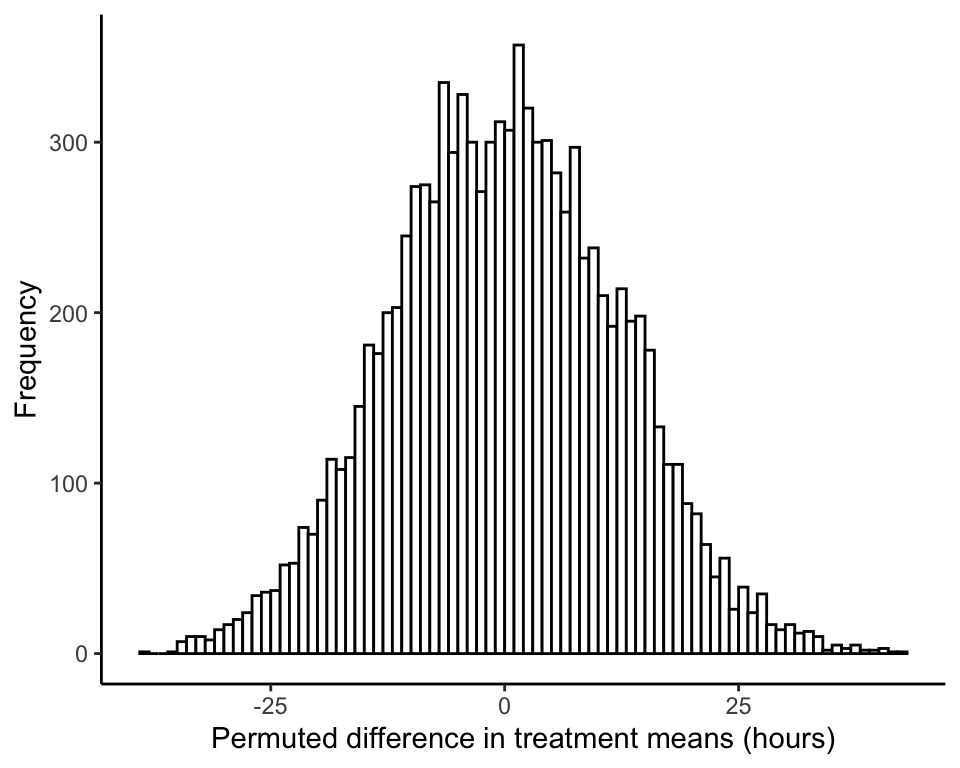

R code for examples in Chapter 13:
Handling violations of assumptions
We used R to analyze all examples in Chapter 13. We put the code here so that you can too.
Also see our lab on comparing two means using R.
New methods on this page
-
Data transformations:
marine$lnBiomassRatio <- log(marine$biomassRatio) -
Quantile plots:
qqnorm(marine$biomassRatio, datax = TRUE) -
Mann-Whitney U-test (R uses the equivalent Wilcoxon rank-sum test):
wilcox.test(timeToMating ~ feedingStatus, data = cannibalism) -
Other new methods:
- Shapiro-Wilk test of normality.
- Sign test.
- Permutation test.
Load required packages
We’ll use the ggplot2 add on package to make graphs, and dplyr to calculate summary statistics by group.
library(ggplot2)
library(dplyr)Example 13.1. Marine reserves
The normal quantile plot, Shapiro-Wilk test of normality, and the log transformation, investigating the ratio of biomass between marine reserves and non-reserve control areas.
Read and inspect data
marine <- read.csv(url("https://whitlockschluter3e.zoology.ubc.ca/Data/chapter13/chap13e1MarineReserve.csv"), stringsAsFactors = FALSE)
head(marine)## biomassRatio
## 1 1.34
## 2 1.96
## 3 2.49
## 4 1.27
## 5 1.19
## 6 1.15Histogram
A histogram visualizes the frequency distribution of biomass ratio (Figure 13.1-4).
hist(marine$biomassRatio, right = FALSE, col = "firebrick",
las = 1, xlab = "Biomass ratio", main = "")
or
ggplot(marine, aes(biomassRatio)) +
geom_histogram(fill = "firebrick", col = "black", binwidth = 0.5,
boundary = 0, closed = "left") +
labs(x = "Biomass ratio", y = "Frequency") +
theme_classic()
Normal quantile plot
The line in the normal quantile plot of Figure 13.1-4 passes through the first and 3rd quartiles of the data.
qqnorm(marine$biomassRatio, col = "firebrick", pch = 16, las = 1,
datax = TRUE, xlab = "Biomass ratio")
qqline(marine$biomassRatio, datax = TRUE, lwd = 2)
Shapiro-Wilk test
A test of the goodness of fit of the normal distribution to data.
shapiro.test(marine$biomassRatio)##
## Shapiro-Wilk normality test
##
## data: marine$biomassRatio
## W = 0.81751, p-value = 8.851e-05Natural log-transformation
The function log() takes the natural logarithm of all the elements of a vector or variable. The following command saves the result as a new variable in the original data frame, marine.
marine$lnBiomassRatio <- log(marine$biomassRatio)Histogram
A histogram of the data after log-transformation of marine biomass ratio (Figure 13.3-2).
hist(marine$lnBiomassRatio, right = FALSE, col = "firebrick",
las = 1, xlab = "Log biomass ratio", main = "",
breaks = seq(-0.25, 1.5, by = 0.25))
or
ggplot(marine, aes(lnBiomassRatio)) +
geom_histogram(fill = "firebrick", col = "black", binwidth = 0.25,
boundary = 0, closed = "left") +
labs(x = "Log biomass ratio", y = "Frequency") +
theme_classic()
95% CI of the mean
Confidence interval for the mean of the log-transformed data.
t.test(marine$lnBiomassRatio)$conf.int## [1] 0.3470180 0.6112365
## attr(,"conf.level")
## [1] 0.95Back-transform 95% CI
Transform the lower and upper limits of the confidence interval back to the original untransformed scale (exp() is the inverse of the natural log function).
exp( t.test(marine$lnBiomassRatio)$conf.int )## [1] 1.414842 1.842708
## attr(,"conf.level")
## [1] 0.95Example 13.4. Sexual conflict
The sign test, comparing the numbers of species in 25 pairs of closely related insect taxa.
Read and inspect data.
conflict <- read.csv(url("https://whitlockschluter3e.zoology.ubc.ca/Data/chapter13/chap13e4SexualConflict.csv"), stringsAsFactors = FALSE)
head(conflict)## taxonPair nSpeciesMultipleMating nSpeciesSingleMating difference
## 1 A 53 10 43
## 2 B 73 120 -47
## 3 C 228 74 154
## 4 D 353 289 64
## 5 E 157 30 127
## 6 F 300 4 296Histogram
A histogram of the difference in numbers of species (Figure 13.4-1).
hist(conflict$difference, right = FALSE, col = "firebrick",
breaks = 50, xlab = "Difference in species number", las = 1)
Frequencies
Count up the frequency of differences that are below, equal to, and above zero.
The command below creates a new variable in the data frame called conflictZero to indicate whether each difference is below, equal to, or above 0.
conflictZero <- cut(conflict$difference, breaks = c(-Inf, 0, 1, Inf),
labels = c("below","equal","above"), right = FALSE)
table(conflictZero)## conflictZero
## below equal above
## 7 0 18Sign test
The sign test is just a binomial test. The output includes a confidence interval for the proportion using the Clopper-Pearson method, which isn’t covered in the book.
binom.test(7, n = 25, p = 0.5)##
## Exact binomial test
##
## data: 7 and 25
## number of successes = 7, number of trials = 25, p-value = 0.04329
## alternative hypothesis: true probability of success is not equal to 0.5
## 95 percent confidence interval:
## 0.1207167 0.4938768
## sample estimates:
## probability of success
## 0.28Example 13.5. Cricket cannibalism
**The Wilcoxon rank-sum test (equivalent to the Mann-Whitney U*-test) comparing times to mating (in hours) of starved and fed female sagebrush crickets. We also apply the permutation test** to the same data*.
Read and inspect data
cannibalism <- read.csv(url("https://whitlockschluter3e.zoology.ubc.ca/Data/chapter13/chap13e5SagebrushCrickets.csv"), stringsAsFactors = FALSE)
head(cannibalism)## feedingStatus timeToMating
## 1 starved 1.9
## 2 starved 2.1
## 3 starved 3.8
## 4 starved 9.0
## 5 starved 9.6
## 6 starved 13.0Multiple histograms
The following commands produce Figure 13.5-1. We begin by ordering the categories of the feeding status variable so that “starved” comes before “fed” in the histogram.
cannibalism$feedingStatus <- factor(cannibalism$feedingStatus,
levels = c("starved", "fed"))
ggplot(cannibalism, aes(x = timeToMating)) +
geom_histogram(fill = "firebrick", col = "black", binwidth = 20,
boundary = 0, closed = "left") +
facet_wrap( ~ feedingStatus, ncol = 1, scales = "free_y") +
labs(x = "Time to mating (hours)", y = "Frequency") +
theme_classic()
Wilcoxon rank-sum test
This test, available in R, is equivalent to the Mann-Whitney U-test.
wilcox.test(timeToMating ~ feedingStatus, data = cannibalism)##
## Wilcoxon rank sum test
##
## data: timeToMating by feedingStatus
## W = 55, p-value = 0.3607
## alternative hypothesis: true location shift is not equal to 0Permutation test
Permutation test of the difference between mean time to mating of starved and fed crickets.
Observed value
Begin by calculating the observed difference between means (starved minus fed). The difference is -18.25734 in this data set.
cricketMeans <- summarize(group_by(cannibalism, feedingStatus),
timeToMating = mean(timeToMating, na.rm = TRUE))
cricketMeans <- as.data.frame(cricketMeans)
cricketMeans## feedingStatus timeToMating
## 1 starved 17.72727
## 2 fed 35.98462diffMeans <- cricketMeans$timeToMating[1] - cricketMeans$timeToMating[2]
diffMeans## [1] -18.25734Number of permutations
Decide on the number of permutations. We use 10K here.
nPerm <- 10000Run a loop
Create a loop to permute the data many times (the number of times determined by nperm). In the following loop, i is a counter that climbs from 1 to nPerm by 1. In each iteration, the permuted difference is saved in the object permResult.
permResult <- vector() # initializes
for(i in 1:nPerm){
# step 1: permute the times to mating
cannibalism$permSample <- sample(cannibalism$timeToMating, replace = FALSE)
# step 2: calculate difference betweeen means
permSampleMean <- as.data.frame(summarize(group_by(cannibalism, feedingStatus),
permMean = mean(permSample, na.rm = TRUE)))
permResult[i] <- permSampleMean$permMean[1] - permSampleMean$permMean[2]
}Plot null distribution
Make a histogram of the permuted differences (Figure 13.8-1).
hist(permResult, right = FALSE, breaks = 100)
or
ggplot(data.frame(permResult), aes(permResult)) +
geom_histogram(fill = "white", col = "black", binwidth = 1,
boundary = 0, closed = "left") +
labs(x = "Permuted difference in treatment means (hours)", y = "Frequency") +
theme_classic()
Approximate \(P\)-value
Use the null distribution to calculate an approximate P-value. This is the twice the proportion of the permuted means that fall below the observed difference in means, diffMeans (-18.25734 in this example). The following code calculates the number of permuted means falling below diffMeans.
sum(as.numeric(permResult <= diffMeans))## [1] 649These commands obtain the fraction of permuted means falling below diffMeans.
sum(as.numeric(permResult <= diffMeans)) / nPerm## [1] 0.0649Finally, multiply by 2 to get the P-value for a two-sided test. The value won’t be identical to the one in the book, or to the value you obtain, because 10,000 iterations is not large enough for extreme accuracy.
2 * ( sum(as.numeric(permResult <= diffMeans)) / nPerm )## [1] 0.1298